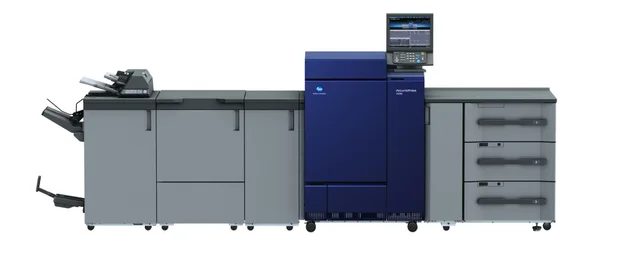

Архив типографии · 09.11.2020
Цифровая печать в ПК КЕМ
Уже в самом начале 2020 год дня нас ознаменован важным событием – приобретением новой печатной цифровой машиной Konica Minolta.

В новое десятилетие с новыми возможностями!
Печатаем книги, каталоги, ежедневники малым тиражом
С этого момента у вас появляется уникальная возможность заказать в нашей типографии любую многостраничную продукцию малым тиражом: от эксклюзивной серии книг до фирменных блокнотов с логотипом.
Главной особенностью малотиражной печати в нашей типографии является то, что качество исполнения остается неизменным – все постпечатные операции выполняются в условиях производства.
Наши заказчики хорошо знакомы с тем, насколько профессионально выполняется работа в условиях нашего производства. К нам обращаются все, кому важно получить на выходе по-настоящему качественное, красивое, долговечное изделие.
Что касается самой печатной машины и ее особенностей
- Коника Минолта – японский холдинг, один из ведущих мировых производителей фотокопиров, факсовых аппаратов, лазерных принтеров. Их машины для профессиональной печати давно и вполне заслуженно завоевывают рынок полиграфии.
- Высокоскоростная печать обеспечивает максимальную производительность – скорость печати 100 листов в минуту.
- Технология тонерной печати позволяетвоспроизвести великолепную точность, яркость и насыщенность изображения. Это происходит благодаря тому, что машина наносит краску на лист в виде сухого тонера, который запекается под действием высокой температуры. В отличие от печати жидкими красками, наносимая точка не расплывается на бумаге, цвет не впитывается и не тускнеет, что позволяет добиться таких высоких результатов печати.
- С помощью функции профессионального управления печатью можно корректировать настройки передачи изображения прямо в процессе работы. Вы можете присутствовать при калибровке и тут же увидеть результат печати своего макета.
- Возможность печатать на разных носителях – от кальки, до картона плотностью до 350гр., а так же офсетные, мелованные, разные фактурные дизайнерские бумаги.
Что мы с вами имеем в итоге?
В итоге, мы имеем возможность профессионально изготовить хорошие, качественные, красивые книги, каталоги, журналы, ежедневники, записные книги в количестве от 1 экземпляра! И все возможные способы скрепления, виды отделки блока и обложки остаются доступными для небольшого тиража так же, как для крупного!
По вопросам заказа и стоимости изделий Вы можете обратиться к нашим менеджерам по многоканальному телефону +7 499 280 80 11 или отправить электронный запрос на почту sekret@a-kem.ru.